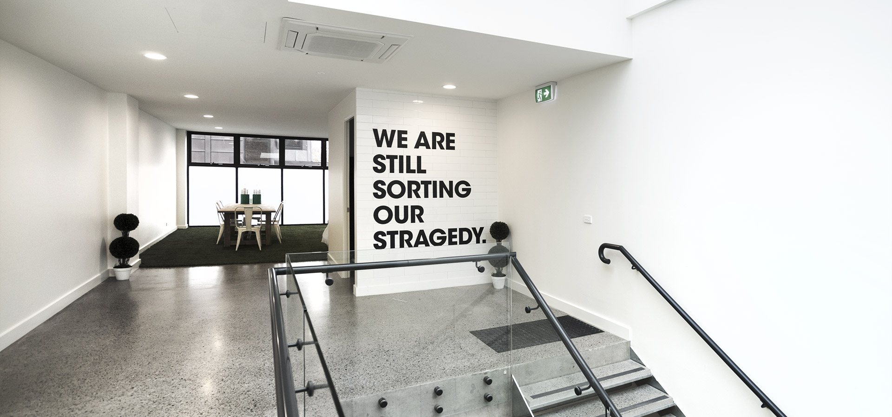

-
Hair care
Multi-Peptide Serum
for Hair Density머리카락 건강을 유지하도록 설계되어 있는 두피 관리 세럼
디오디너리 "멀티 펩타이드 세럼 for hair density"
모발을 두껍고 밀도가 높으면서 더 튼튼하도록 개선합니다
자기 전 몇 방울, 하루에 한 번씩 두피를 바르십시오. -
Hair care
Multi-Peptide Serum
for Hair Density머리카락 건강을 유지하도록 설계되어 있는 두피 관리 세럼
디오디너리 "멀티 펩타이드 세럼 for hair density"
모발을 두껍고 밀도가 높으면서 더 튼튼하도록 개선합니다
자기 전 몇 방울, 하루에 한 번씩 두피를 바르십시오. -
New Releases
100% organic virgin
sea-buckthorn fruit oil다양한 안티에이징 테크놀리지를 담은 수분 베이스 세럼,
디오디너리 "뷔페"
주름, 기미 등 여러 노화의 증상을 개선합니다.
아침과 저녁에 크림과 로션 전에 사용하세요. -
-
